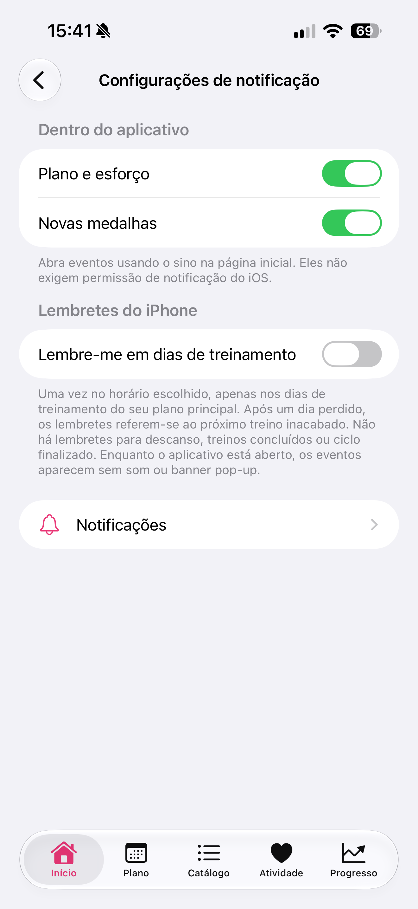
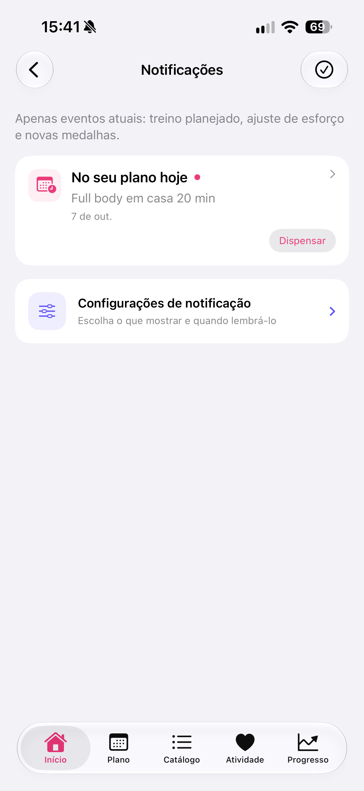

Por Nikita Revin, desenvolvedor do Tonus · 27 de outubro de 2026
Ajuste o horário dos lembretes, confira os dias do plano e entenda a diferença entre avisos do iPhone e eventos dentro do Tonus.
Se você quer receber um aviso nos dias em que pretende treinar, ative os lembretes do iPhone nas configurações do Tonus. A mesma tela também controla os eventos que aparecem dentro do aplicativo. Essas duas opções funcionam separadamente.
Ative o lembrete e escolha o horário
- Na tela Início, abra o Perfil pelo ícone de pessoa no canto superior direito.
- Abra a opção de lembretes para chegar a Configurações de notificação.
- Em Lembretes do iPhone, ative Lembre-me em dias de treinamento.
- Se o iPhone pedir autorização para enviar notificações, permita os alertas.
- Ajuste Hora, que aparece quando o lembrete está ativado.
A captura abaixo mostra o lembrete desligado. Por isso, o seletor de horário ainda não aparece. As opções Plano e esforço e Novas medalhas estão ligadas, mas elas controlam os eventos dentro do app.

Confira os dias do seu plano
O horário escolhido vale para os dias de treinamento do plano principal. Se você treina na segunda, quarta e sexta, deixar o lembrete ligado não cria uma sessão extra na terça. Dias de descanso ficam sem esse aviso.
Quando um dia é perdido, os lembretes acompanham o próximo treino que ainda falta concluir. Uma sessão já concluída ou um ciclo finalizado não precisa de um novo aviso. Para conferir como os dias são reorganizados, veja o guia do plano flexível de 12 treinos.
Escolher um horário para o lembrete não altera, por si só, a duração da sessão ou os dias do plano. Se quer mudar esses dados, abra as configurações do próprio plano e confira o calendário depois de salvar.
Use o sino para consultar os eventos no app
Plano e esforço e Novas medalhas ficam na seção Dentro do aplicativo. Abra o sino na página inicial para consultar os eventos disponíveis. Essa lista funciona mesmo quando o Tonus não tem permissão para enviar notificações do iOS.
Enquanto você está usando o Tonus, os eventos aparecem dentro do aplicativo, sem som ou banner de notificação. A ausência de um banner nesse momento não significa que a lista do sino deixou de funcionar.

Se o aviso não aparecer
Comece pela tela de configurações do Tonus: confira se Lembre-me em dias de treinamento está ligado e se o horário corresponde ao que você quer. Depois, abra o plano e veja se há um treino pendente para aquele dia.
Se a autorização do iPhone estiver bloqueada, o app oferece Abra as configurações do iPhone. Nos Ajustes do iOS, confira as notificações do Tonus e a forma como os alertas são exibidos. A Apple explica essas opções no guia de notificações do iPhone.
Uma notificação pode ficar silenciosa conforme os ajustes do aparelho. Não use o som como a única forma de conferir um aviso: consulte também a Central de Notificações e a lista do sino no Tonus.
Desligue somente o que não quer receber
Para parar os lembretes do iPhone, desative Lembre-me em dias de treinamento. Você pode manter Plano e esforço e Novas medalhas ligados para consultar os eventos quando abrir o app. Se quiser ocultar essas categorias da lista interna, use os respectivos controles.
Ativar ou desligar avisos não conclui sessões nem apaga o histórico de treinos. Você pode continuar usando os planos e as instruções escritas sem internet. A integração com Apple Saúde é opcional.
Este guia descreve o Tonus 1.4 para iPhone com iOS 17 ou posterior. O acesso é gratuito, sem cadastro, assinatura ou compras no app. Planos e instruções escritas funcionam offline; vídeos online precisam de conexão, e serviços externos podem mostrar anúncios.